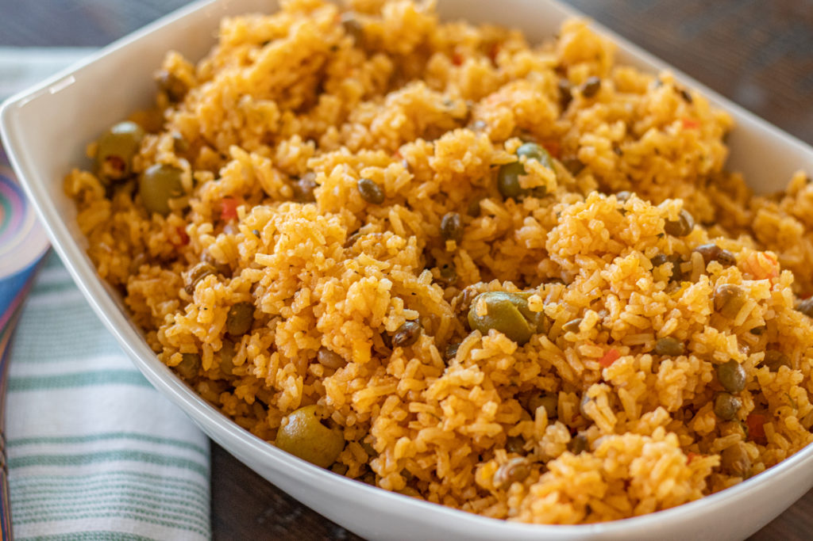

Receta para preparar un rico arroz con gandules

Descripción: Arroz con gandules.
Ingredientes:
- 2 pimientos verdes, cortados en cubitos
- 1 cebolla, picada
- 6 dientes de ajo, picados
- 1 manojo de cilantro, finamente picado
- 3 cucharadas de aceite de oliva
- 1 lata (15 onzas) de salsa de tomate
- 1 paquete (0,25 onzas) de condimento español
- 3 tazas de arroz integral crudo
- 2 latas (15 onzas) de gandules, escurridos
- 6 tazas de agua hirviendo
Pasos a seguir:
- Coloque los pimientos verdes, la cebolla, el ajo y el cilantro en una licuadora o procesador de alimentos, haga puré. Esta mezcla se llama soffrito, es tu base de condimento. Puede almacenarse en un recipiente hermético y refrigerarse hasta por 2 semanas o congelarse hasta por 6 meses.
- Coloque 3 cucharadas de aceite de oliva y 6 cucharadas de soffrito en una cacerola de 8 cuartos. Cocinar durante 3 o 4 minutos para que suelten los aceites.
- Vierta una lata de salsa de tomate y el paquete de condimentos españoles en la cacerola, mezcle bien. Agregue 3 tazas de arroz a la mezcla y revuelva hasta que el arroz esté cubierto.
- Agregue los gandules a la mezcla y agregue agua hirviendo. Cubra la olla con papel de aluminio y una tapa de olla. Reduzca el fuego a fuego lento y cocine durante 45 minutos o hasta que el arroz esté tierno.